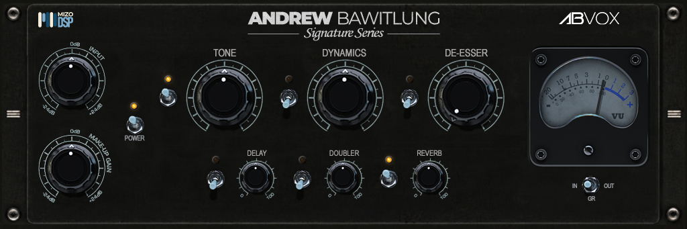

Tone
Class-A 1073 warmth and tone with vintage console transformer saturation, low-mid weight, presence bite, and silky 16 kHz air.
Mizo's first in-house audio plugin — crafted for effortless vocal presence, Class-A analog warmth, and pristine mix clarity.

Featured Release
One panel, one definitive vocal sound. ABVox unites six essential analog-modelled stages into an effortless, single-window vocal instrument tuned for tracking and mixing.
Class-A 1073 warmth and tone with vintage console transformer saturation, low-mid weight, presence bite, and silky 16 kHz air.
1176 and LA-2A chain type compressor — ultrafast FET peak-catching into smooth optical auto-leveling for upfront, consistent vocals.
Algorithmic style dual-path dynamic split with 32-sample RMS detection and dynamic resonance suppression for transparent sibilance control.
Ping-pong analog tape echo with S1 stereo imaging, authentic 0.1 Hz tape flutter, Abbey Road send filtering (188 Hz – 3.5 kHz), and warm saturated tape feedback.
Reel ADT type doubler featuring Abbey Road-inspired artificial double tracking with stereo micro-pitch detuning and wide spread.
Chamber reverb plates style with calibrated 55.6 ms pre-delay, diffuse all-pass comb network, and dedicated Abbey Road tone shaping.
About MizoDSP
Founded by Andrew Bawitlung, crafting analog-modelled studio audio plugins and precision DSP audio effects.

Available Now
Andrew Bawitlung Signature Series · VST3 / VST / AU / AAX / CLAP · Windows & macOS · Zero-latency.